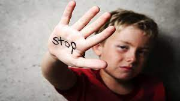

Child welfare information gateway
Learn how child abuse and neglect are defined in Federal law and State laws and find resources that distinguish between discipline and abuse.

It encompasses a range of abusive behaviors, including physical, sexual, and emotional abuse, as well as neglect. Children who experience abuse may suffer from a range of negative impacts, including trauma, mental health issues, and even physical harm or death.
By speaking out against abuse, supporting organizations that work to protect children, and advocating for stronger laws and policies, we can help create a safer, healthier world for all children.
Remember, every child deserves to be loved, cherished, and protected.Child abuse is not just physical violence directed at a child. It is any form of maltreatment by an adult, which is violent or threatening for the child. This includes neglect.
When child abuse occurs in the home and the abuser is, for example, the child’s parent or care giver, this is a form of domestic violence .But children are sometimes abused by other adults on whom they are dependent, such as day nursery workers, teachers and sports coaches.
Sometimes abuse is intentional, but not always. If parents or caregivers are no longer able to cope with caring for the child, this can result in dysfunctional behavior and abuse.

Some examples include slapping, pinching, choking, kicking, shoving, or inappropriately using drugs or physical restraints.
It has been estimated that roughly two-thirds of those harming a vulnerable adult are family members, most often the victim’s adult child or spouse.
Research has shown that in most instances the abuser is financially dependent on the vulnerable adult’s resources and have problems related to alcohol and drugs.
Child maltreatment is often hidden. Only a fraction of child victims of maltreatment ever gets support from health professionals. A child who is abused is more likely to abuse others as an adult so that violence is passed down from one generation to the next. It is therefore critical to break this cycle of violence, and in so doing create positive multi-generational impacts. Preventing child maltreatment before it starts is possible and requires a multisectoral approach. Effective prevention approaches include supporting parents and teaching positive parenting skills, and enhancing laws to prohibit violent punishment.

Maltreatment can cause victims to feel isolation, fear, and distrust, which can translate into lifelong psychological consequences that can manifest as educational difficulties, low self-esteem, depression, and trouble forming and maintaining relationships.
Some children overcome the physical and psychological effects of child abuse, particularly those with strong social support and resiliency skills who can adapt and cope with bad experiences. For many others, however, child abuse may result in physical, behavioral, emotional or mental health issues — even years later.?
problems with brain development. taking risks, like running away from home, using drugs and alcohol or breaking the law. getting into dangerous relationships. difficulty with relationships later in life, including with their own children.
Learn how child abuse and neglect are defined in Federal law and State laws and find resources that distinguish between discipline and abuse.
What Is Child Abuse and Neglect? Recognizing the Signs and Symptoms